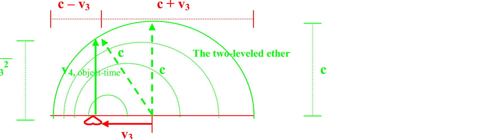
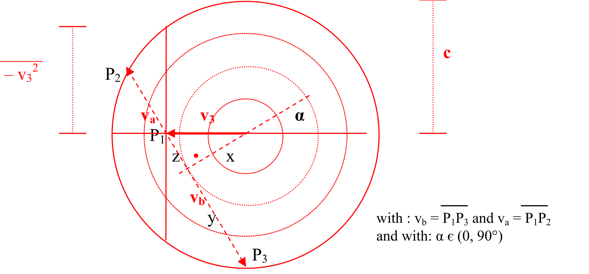
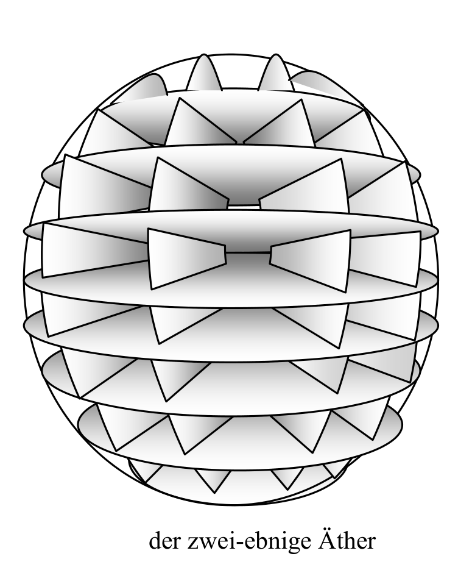
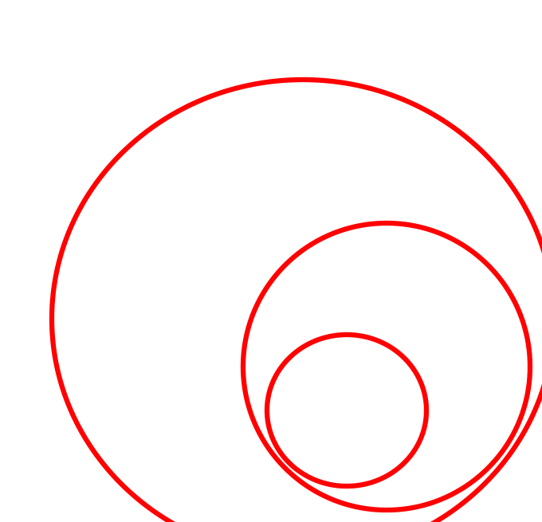

NewBerlin 的「5 维洛伦兹以太」、我们隧道页里的「球面共形层」，张祥前的「统一场论」—— 三套语言描述的是同一个三角形。拖动下面这一个角 α（勾 V* 与弦 K 的夹角），三栏同时动，你会看到时间倍率、模形式衰减、 质量归零是同一件事的三个投影。所有数字都可复算，原文出处见页脚。
V4²+V5²=K²。竖弦 L₄=K·sinα 的长短就是物体时间的长短 （原文：tobject ∝ 第 4 空间方向电场弦长）。α→0°（勾→弦），弦→0，物时冻结。
|q| = e−η。每往上叠一层（Δη = L），|q| 乘 e−L； 取 L = ln φ，每层正好衰减 1/φ。底边 Im τ=0 是尖点，也是光速视界。
|P|/(mc) = 1−β。C 是空间本底光速矢量，V 是物体速度。β→1 时 P→0—— 他说的「抵消空间光速运动 ⇒ 质量归零」，在这张图上就是竖边被压平。
作者几乎不用公式排版——他把关系直接画成红绿线条。下面四张取自原书 PDF（411 页）理论章 第 363–411 页，300 dpi 原样裁出，一笔未改。图注里写的「对应某某栏」是我们的读法，不是原文标注。




第二行是 Gudermann 映射：双曲快度 η ↔ 勾弦夹角 α，η = artanh(cos α) = ln cot(α/2)。 它正是「指数衰减」与「三角投影」之间的那座桥——这是透镜能「把时间摊成空间」的全部数学内容， 不多不少。第一行说明：模形式里 q 的模，物理上就是沿运动方向的多普勒因子； 时间倍率则是 q 与 1/q 的算术平均。
| 物理量 | NewBerlin 5D 以太 | 本页球面共形层 | 张祥前统一场论 |
|---|---|---|---|
| 速度自由度 | V*（第 4/5/6 方向速度） | Im τ（双曲高度）／Re τ（剪切） | V（物体速度），C 为空间本底光速 |
| 时间是什么 | 第 4 方向电场弦长 t ∝ L₄ |
层深：y = η/2π，第 n 层时间流速 ×e−nL |
观察者周围空间光速位移的「感觉」，t ∝ 位移 |
| β→1 的极限 | L₄→0，物时冻结；舱内时间可快 10/100/1000× | τ→i∞：q→0，模展开退化，层永不闭合 |
P→0，质量归零，可等价光速飞行 |
| 「过去／未来」 | 短弦侧=过去印痕，长弦侧=超前投影（明确：不是完整未来） | Re τ 剪切方向；双旋/叠影的两条通道 | 空间即存储器：位移线记录，可写可读 |
| 数学骨架 | 勾股约束 V₄²+V₅²=K²（正定以太） |
PSL(2,ℤ) 作用在 ℍ²；ℍ²≅速度空间 |
F = m(C−V) 微分形式，四场统一 |
| 可算／可测 | 相对论极限可复算；10×/100× 倍率为设定值，无实测 | 全部可算：γ、|q|、层数、GIF 帧全部可复现 | P 公式可算；「质量归零」无独立测量 |
| 原文模块 | 原文要求 | 页面里的对应零件 | 差距 |
|---|---|---|---|
| 1 存储介质 | 5 维洛伦兹以太，第 4 方向作真实自由度 | τ 上半平面 + 模形式场（j 不变量、p(n)） | 我们是 2 维玩具；无 3D 场解 |
| 2 写入 | 相互作用室三维电场在高维场留「精细印痕」 | 层叠写入：每层一个等快度切片 | 无写入物理，只有几何层 |
| 3 时间分选 | 短弦读过去／长弦超前投影未来 | 双旋四档混合 + Re τ 剪切 + 叠影滤色 | 「过去」只是相位偏移，非真实回溯 |
| 4 向量输出 | 答案带概率向量，不是单条时间线 | 四档混合（avg/intf/diff/scr）= 概率叠加的视觉版 | 无概率标定，只有美学权重 |
| 5 显示界面 | 玻璃板 + 底部极小玻璃小球作光源 + 背光 | 白光锥 + 焦点核 exp(−rr/0.0035) + 球面层 | 我们的「光源」是渲染，非物理场源 |
SNR ∝ e−kη，
于是「能读多远的未来」有一个硬上限 Tmax = ln(SNR₀/SNRmin)/Γ。
这条是可算、可否证的——但它是我们加的，不是原文的。
| # | 动作 | 代价 | 收益 |
|---|---|---|---|
| 1 | 把层距默认从 0.48 精确到 ln φ = 0.481212 | 滑条显示不变，内部值改一位 | 「每层黄金衰减」从巧合变成定义，参数有了出处 |
| 2 | 球面层加一个只读「透镜档」读数：β / γ / |q| | 约 20 行，不动现有渲染 | 拖 Im τ 时能看到「现在等于几倍时间流速」 |
| 3 | 张祥前站加一张入口卡，指向本页 | 一个 <a> | 两套素材库从「各说各话」变成「同一张三角」 |
不建议现在就往 343 KB 的主页里塞第 4 套渲染管线——你已经踩过一次「改了没反应」的坑。 先让桥接页把语言统一，主页面只加读数，不加分支。
2026-11-16 从视频号截图溯源出两支也自称能看过去未来的说法。它们给不出一个角、一个 β、一条可复算的公式， 所以不并入上面「三源同构」表——列在这里，只为说明本页那个「时间可当维度操作」的母题，另有两套民间／社群语言。 完整引文、确信度与逐条边界见 → 过去现在未来页 · 第五节。
| 源流 | 自述原理 | 与本页同构？ | 判据 |
|---|---|---|---|
| 梵蒂冈 Chronovisor Ernetti 神父，1952–1972 |
声光波不灭留时空回响 → 12 根稀有合金天线调谐 → CRT 显像 | 否（只有「残留回响」的壳） | 已判伪造：照片是 1931 木雕的镜像；剧本拉丁词晚 250 年；临终翻供 |
| Damanhur / Selfica Airaudi 发展；《Spirals of Energy》 |
螺旋（Selfica 本义）＋金属＋颜色＋炼金墨水编成宿主，超光速「边界智能」进入时减速、经 microlines 接气场；神殿 300 吨电路＝巨型电容器；九纵九横 synchronic lines 交叉成 shining knot；Time Cabin 用 selfs/spheres/spheroselfs/晶体/电磁场/振荡器/激光；TimeSeed「时间如丝带、隔离的时间粒子向后分支叠加，改写现在」 | 部分（「未来是概率分支」与 Figure 47 的 spirit-string 向量同母题，但无公式：无 β、无 {pᵢ}、无成像方程） | 社群自述、无独立验证；技术细节与勘误见过去现在未来页第五节，原文 Building a Timeship / TimeSeed |
ℍ²≅速度空间为标准数学结论。